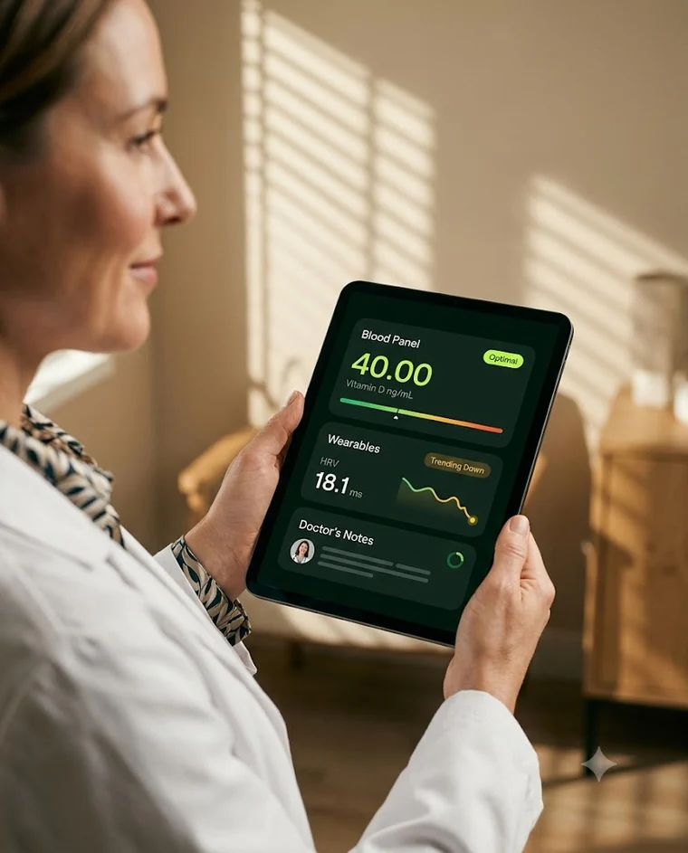
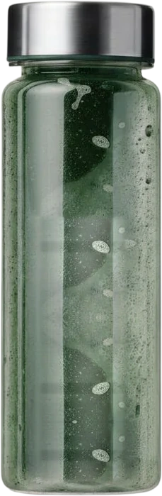
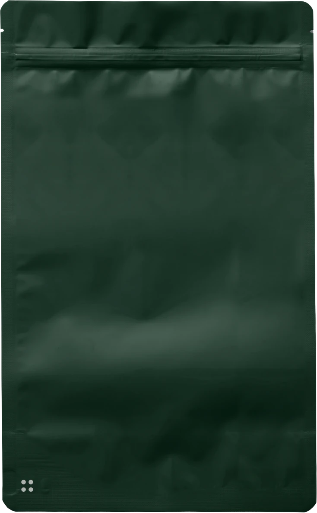
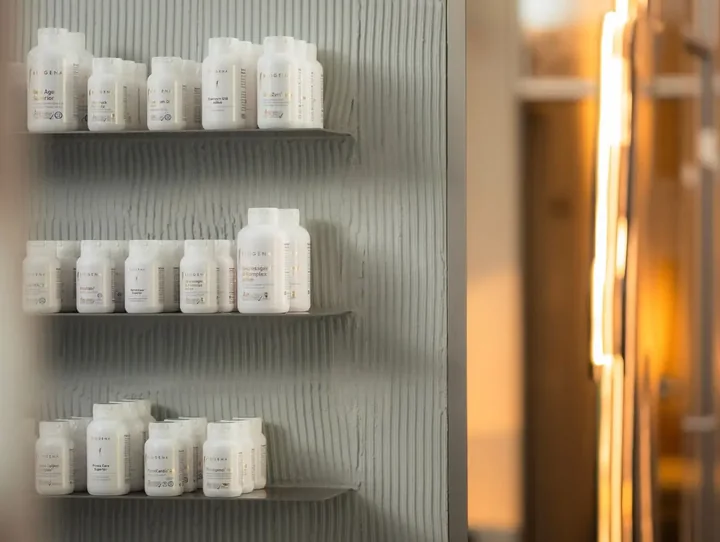
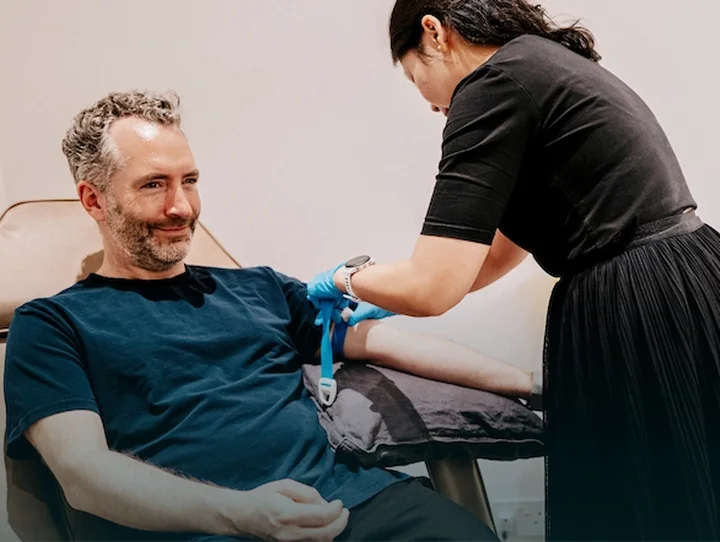
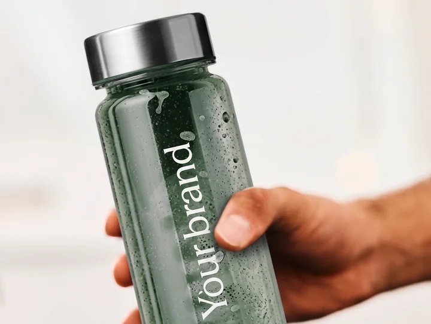
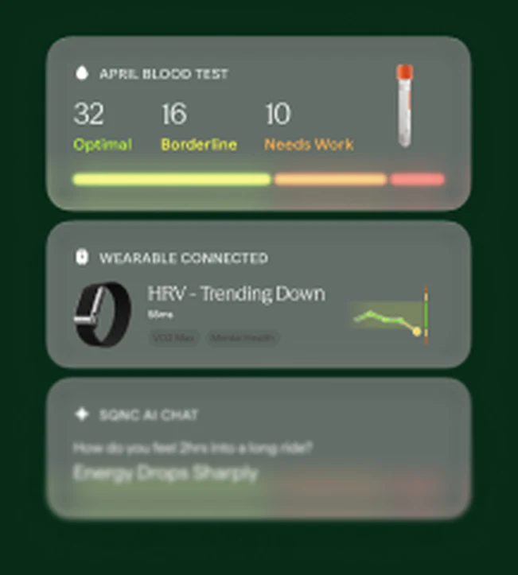
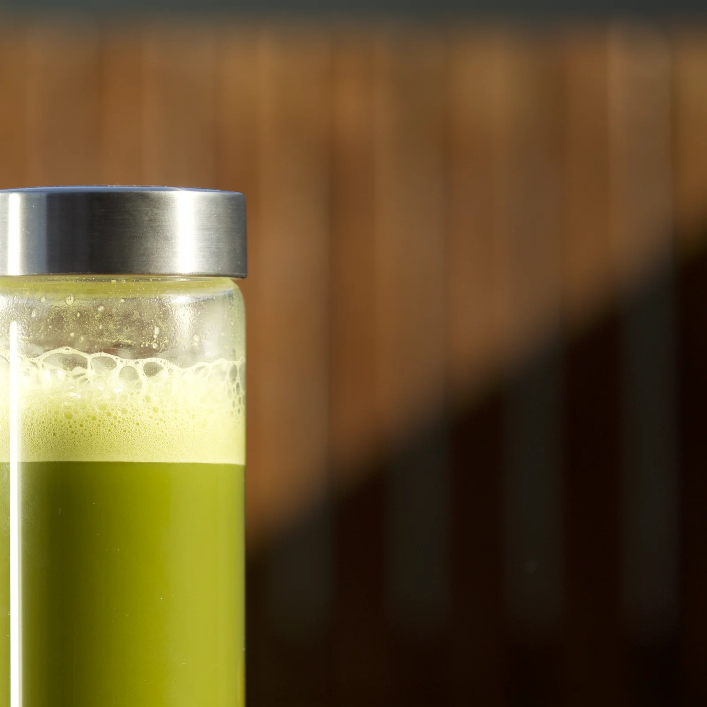

1
Tests are completedBlood, wearables, urine and MRT
Your customer completes the testing you offer
Main inputs required are a blood test, wearable data and questionnaire.
SEQUENCE - For partners
Formulated based on blood and wearable data.
Manufactured in the UK from the highest quality ingredients.
Thanks, we’ll be in touch.
Or We’ll be in touch, or book a call directly

Your brand
Powered by

Your brand
Precisely dosed
based on your
data, Charlotte.
29 components
Powered by

1Main inputs required are a blood test, wearable data and questionnaire.
SEQUENCE AI model
Health data SupplementProprietary
supplements
database
Re-testing
Formulation can be customised by your specialists and by the customer.
Your brand
Powered by
Your brand
Precisely dosed
based on your
data, Charlotte.
29 components
Powered by
Delivered to the customer in 72h.
A daily sachet that you mix into water.
Differentiate
Competitors are using non-personalised capsules

Dosed per patient, not per shelf
Re-testing
Re-testing bookings increase to monitor supplement effects

Re-formulated from new data
Daily habit
Your brand integrated to the daily routine of your customers

Your name, every morning
Revenue
Get a 35% margin each month and save on clinic’s man hours
35% margin
per customer each month
Formulation
Our custom AI helps to formulate the supplement

Dosed from the panel you ran
Actionable
Customers get an actionable solution with your branding
Your name, every morning
Integration
Fully integrate the experience into your app via our API
They never leave your app
Revenue
Get a 35% margin each month on customers you already have
35% margin
per customer each month
Illustrative. Your clinician has the final say before it ships.
SEQUENCE builds the first formula and explains every dose.
Your nutritionist and customer can both adjust the formulation as needed. The formula can be updated on a monthly basis.
Two of the three ways need no engineering at all.
Live within one day, no engineering
Best for clinics, coaches, teams
You place and control every order.
Best for clinics that order themselves
Fully embedded, so patients never leave your app.
Recommended at 100+ monthly customers
35%
of every £149 / mo subscription (ex VAT).
You do nothing operational. We cover formulation, manufacturing, shipping and support. The 35% is net revenue to you for as long as each customer stays.
500
Based on 500 subscribers.
CLINIC WORK HOURS SAVED
YOUR NET INCOME PER YEAR
Net to you. This is your share, not the customer’s total spend, and we cover all operations.
Premium components
Using precision dosing equipment, we assemble each customer’s powder individually in the UK.
V1: 29 ingredients today, with new ones added every month.

For your practice
Your brand
Powered by
Your brand
Precisely dosed
based on your
data, Charlotte.
29 components
Powered by
Your name on the pouch, the bottle and the checkout. We formulate, manufacture, ship and support every order, and 35% of each subscription comes back to you.
Powered by
Book a callOr email b2b@drinksequence.co.uk